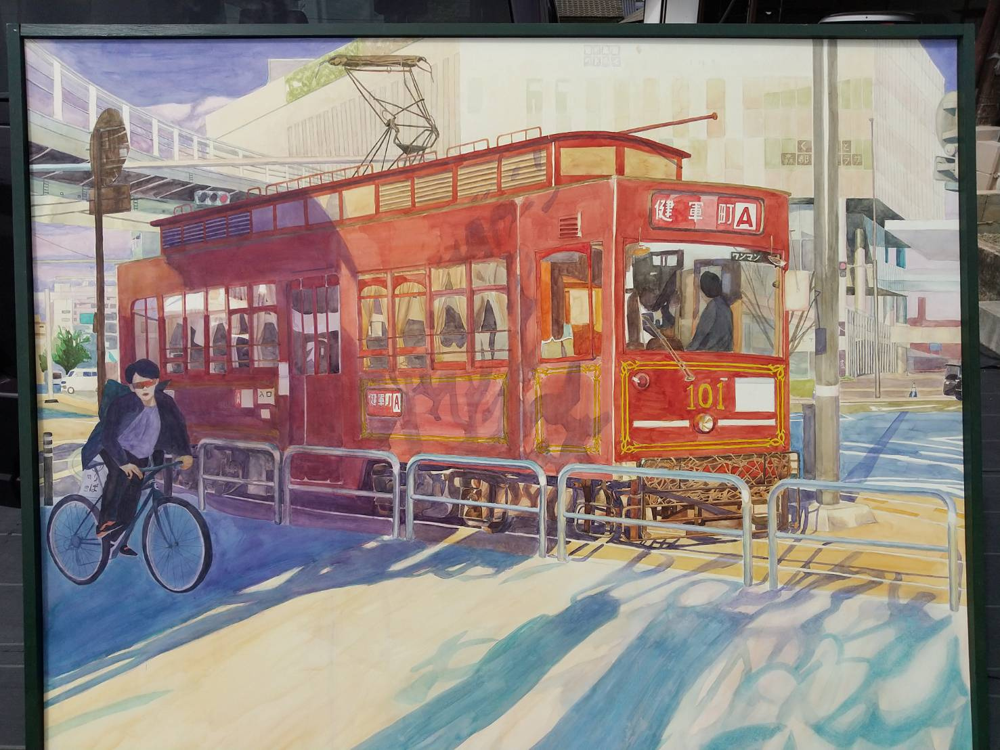
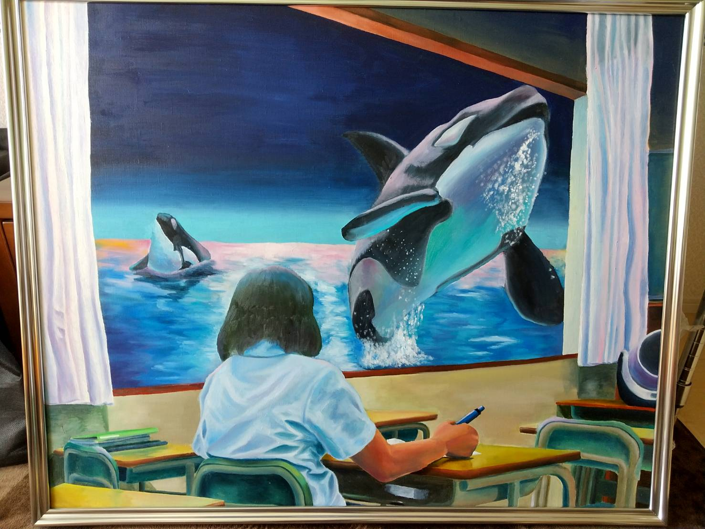

レトロ
卒業制作として完成させた作品。
-
高校の時、通学で使っていた駅でよく見かけていた市電を描いた。
時間帯の決定と、水彩画であるため下書きにとても時間がかかった。
影色に全体を通して紫や青を使うことで統一感を出した。特に電車の車輪部分の着彩に苦労した。
- 「熊本県水彩画会展」にてKAB賞を受賞。
タソガレ
もしも窓の外が海だったらという授業中にふと考えていたことを描いた。
-
ラッセンの絵を参考に制作していった。シャチの影部分をただ影の色を置くのではなく、
海の青や緑の色を置くことで同じ空間にいることを表現した。全体的に影や光が当たっている
部分の色をピンクや青の色を置くことで想像の世界だということを表現した。特に服やカーテン
のシワ、シャチを描くことに苦労した。
- 「くまもと描く力」にて入選。